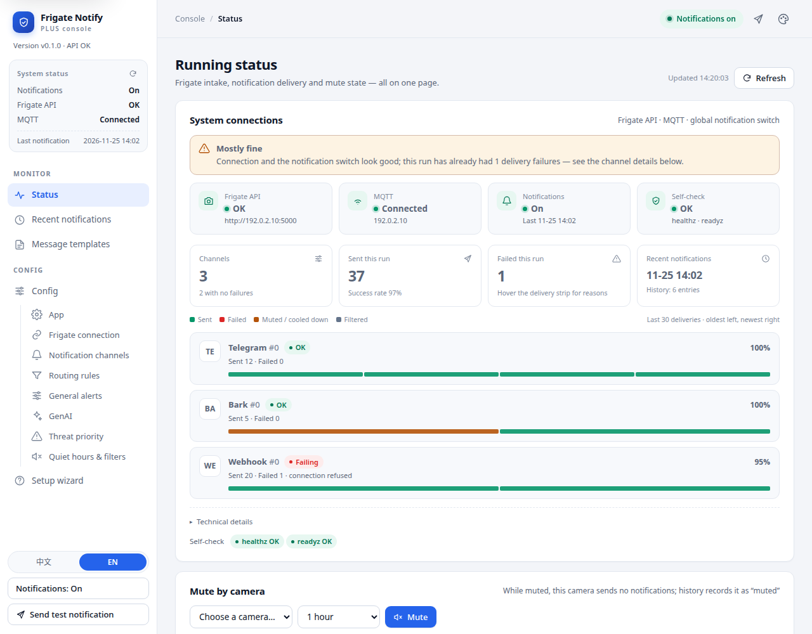
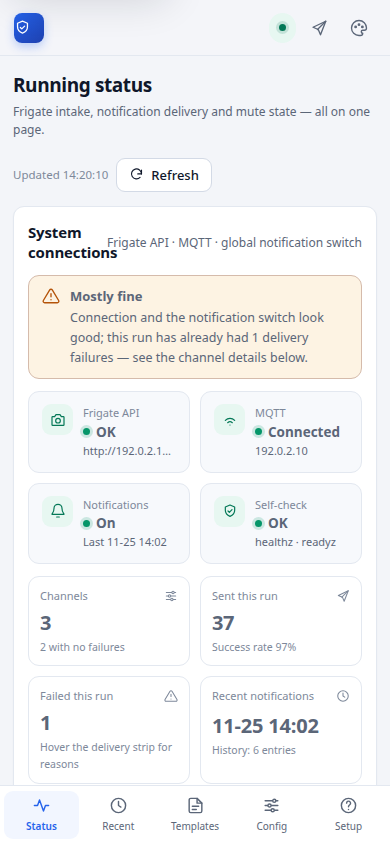
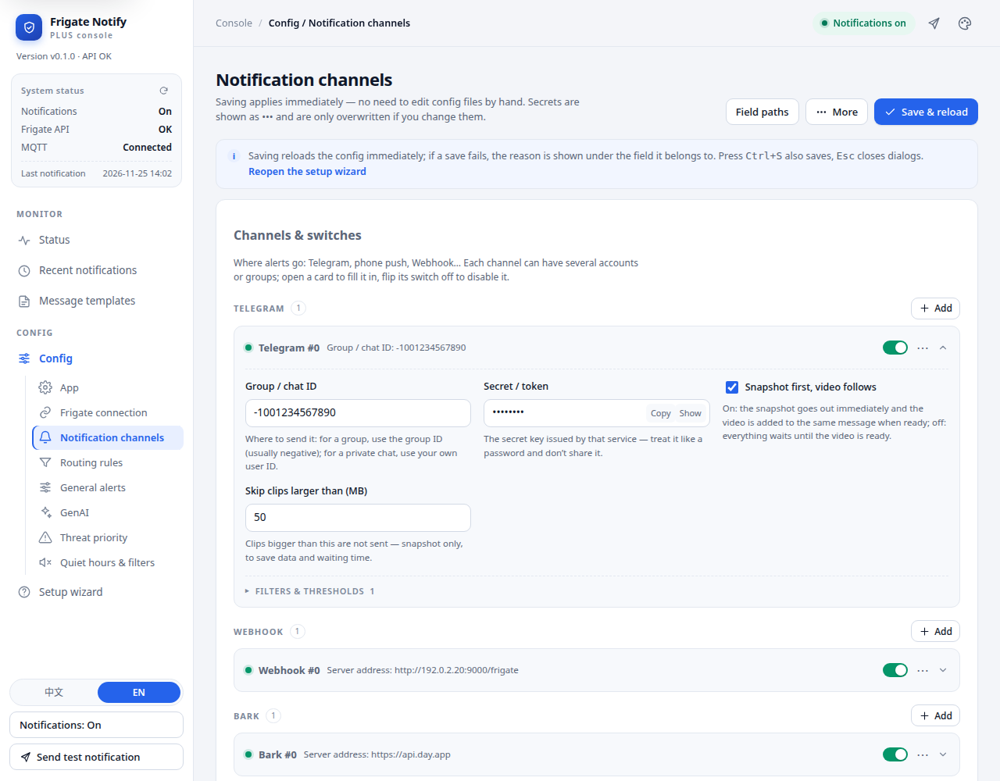

Frigate Notify Plus turns Frigate reviews into rich notifications — snapshot first, then Frigate’s GenAI summary edited into the same message, then the clip. Configured entirely from a Web UI, and sent to the channels you already use.
A single small Go container that runs next to Frigate.


A standalone sidecar that keeps everything a notification should carry — and puts every setting in the browser.
Frigate’s AI title, summary, threat level and observations ride along with the alert. On Telegram, the snapshot goes out first — then the same message is edited in place when the summary and the clip arrive.
Every setting is a browser form: a first-run setup wizard, one-click presets, cameras and zones read straight from your Frigate, and a test send per channel. Raw YAML stays available as a fallback.
Telegram, Bark, Discord, Gotify, Matrix, Mattermost, ntfy, Pushover, Signal, SMTP and webhooks — plus anything Apprise reaches. Each channel supports multiple profiles with their own filters.
Route alerts to different channels by camera, label, zone, sublabel or threat level. If a GenAI update raises a review’s threat level, a fresh alert goes straight to your escalation targets.
A digest of the day at 20:00, the overnight hours at 07:00 — Frigate summarizes the time window and sends it as a single notification. Custom prompts are supported per schedule.
One mounted directory holds the config, logs, templates, mute state and notification history — everything survives container recreation. No account, no cloud; the console is LAN-only by design and speaks English and 中文.
From motion on a camera to one complete message on your phone.
A review starts on one of your cameras — a person at the front door, a car pulling into the garage.
Frigate’s GenAI writes the title, summary and threat level for the review — what happened, not just what was seen.
The snapshot lands instantly, the summary is edited into the same message, and the clip follows. One notification that ends up complete — with per-camera mute and cooldowns keeping it quiet when it should be.
A sidebar workbench on port 8000: status dashboard, notification history, full configuration, templates and a setup wizard — in four themes.

You need Frigate 0.18.x reachable on your LAN and Docker on the host. GenAI features additionally need Frigate’s GenAI configured, with a provider that has the descriptions role.
# Pull the image from GHCR and run it next to Frigate
docker pull ghcr.io/izerok/frigate-notify-plus:v0.1.2
docker run -d --name frigate-notify-plus --network host \
-v /srv/frigate-notify-plus:/data \
-e TZ=Asia/Shanghai \
ghcr.io/izerok/frigate-notify-plus:v0.1.2# docker-compose.yml — the same file ships in the repo
services:
frigate-notify-plus:
image: ghcr.io/izerok/frigate-notify-plus:v0.1.2
container_name: frigate-notify-plus
network_mode: host
environment:
- TZ=Asia/Shanghai
volumes:
- /srv/frigate-notify-plus:/data
restart: unless-stopped
# then: docker compose up -d